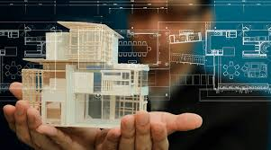

BUILDING INFORMATION MODELING

1Por que elegir JOINT
Transformamos la forma de trabajo tradicional del proyecto arquitectonico, caracterizado por la resolucion de problemas durante la etapa de obra, por el trabajo colaborativo y centralizado de la metodologia BIM.
2Aumentamos tu productividad
Gracias a la aplicacion de la metodologia BIM, logramos un ahorro importante durante la etapa del proyecto, obra y post-obra. Algunas fuentes consideran que este ahorro se encuentra entre un 10% y un 30%.